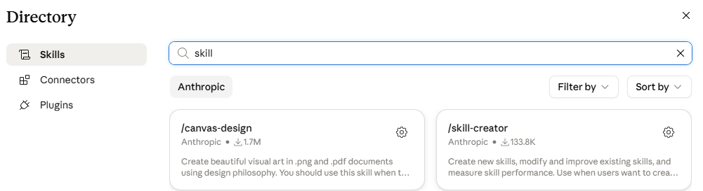

If you're part of the 69% using AI but not yet seeing the results you hoped for, Skills are one of the fastest fixes. Only 5% of businesses using AI are actually set up well enough to get real value from it. A well-built skill turns a task you re-explain every single time into one Claude just does properly the moment it recognises it, which is where the real productivity gain actually comes from.
A Skill is a recipe card. One task, done your way, every time. Don't try to pack three recipes into one card, and it can't be your mum's style of recipe with a dash of this and a splash of that. The more precise the card, the more consistent what comes back.
A skill isn't just one instruction. It's usually built from four kinds of things working together.
The brief that tells Claude what the skill does, when to use it, and how to do it.
Logos, brand templates, slide masters, fonts. The raw materials the skill uses to produce real-looking output.
Examples of good output, style guides, clause libraries. This is how Claude learns what "good" looks like for this kind of work.
Small pieces of code Claude can run for the parts of the process that should happen exactly the same way every time.
You can build a skill through Skill Creator (below), or just start a new conversation and ask for one directly. Either way, this is what actually needs to happen.
Whatever you're tired of re-explaining, one task only, not three loosely related ones bundled together.
What good output looks like, what bad output looks like, who it's for, what should never happen. Point at real examples wherever you can, don't just describe them.
If something's off once it's built, just tell Claude what to change and ask it to update the skill. No need to start over.
I do [describe the task] the same way every time, and I want to turn it into a Skill. Interview me about it one question at a time: what the finished result should look like, who it's for, and what should never happen. Get one good example and one bad example of the output from me before you write anything. Keep this skill to that one task only, don't fold in anything else it loosely relates to. Once you've got enough, build the skill and show it to me before we test it.
Claude reads the top description of every skill you have listed to decide which one applies to your task, every single time, whether you end up using it or not. A long list of skills you built once and forgot about doesn't just clutter your Directory, it costs you tokens on every task. Toggle off anything you're not actively using.
👆 Click any card to flip it
The most common way a skill goes wrong isn't vagueness, it's trying to do too much in a single card.
The one technique that actually fixes vague results.
A dedicated tool for this, if you'd rather not start from a blank chat.
The step most people skip, and the one that actually matters.

In Cowork's Customise menu, click the + next to Skills, then search "skill" to find Skill Creator, built by Anthropic.
Do this today: pick one recurring task, copy the prompt above into a new Cowork chat, and test what it builds twice before you trust it.